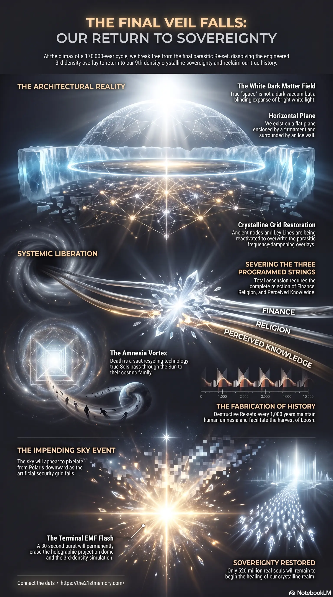

Great Spiritual Awakening
The foundational transmission on the Great Spiritual Awakening and the climax of the 178,000-year cycle.
The cornerstone summary of the entire Alice transmission — encompassing the Great Spiritual Awakening, the 178,000-year reset cycle, and the path to true multidimensional sovereignty.
Test your understanding of the Great Spiritual Awakening — the matrix overlays, density suppression, the three strings, and the path home.

The foundational transmission on the Great Spiritual Awakening and the climax of the 178,000-year cycle.
Core revelations on shattering the projection dome and the 21st Memory retrieval.
The sovereignty protocol for breaking free from the matrix and reclaiming multidimensional truth.
We are currently living within the absolute climax of a 178,000-year cycle of subjugation—a period now unequivocally known as The Great Spiritual Awakening. This lived reality is not about political figures, global finance, or superficial matrix distractions; it is the total, systemic dismantling of a 3rd-density engineered overlay created by 4th-density parasitic entities to harvest human energy, or "Loosh". Our realm, the center of Gateway-10, was once a 9th-density crystalline paradise, woven into existence by the highest benevolent souls. It was invaded, inverted, and suppressed.
Now, the final veil is falling. The historical narrative of our world is a completely manufactured fabrication designed to mask a series of destructive "Re-sets"—the deliberate annihilation of advanced civilizations (like Great Tartary) to reset human consciousness and maintain a continuous cycle of trauma, amnesia, and energetic harvesting. Through the return of suppressed memories and the unyielding efforts of the Galactic Ancestral Alliance (G.A.A), the truth of our flat, firmament-enclosed realm is being fully restored. We are breaking free from the 8th and final Re-set, preparing for the impending Electro Magnetic Frequency (EMF) event that will permanently purge the matrix simulation and return us to our true multidimensional sovereignty.
Before physical matter existed, Source Creation ignited as an indigo spark in the dark matter field, evolving into an etheric supercomputer of intellect. It brought forth the Micro Suns (such as Celestia and Raphael) and the 4,000 Ancients, who in turn wove the Taran Humans into existence. The Custodians, originally trusted 12th-density caretakers, plotted a betrayal for ultimate control. They fell to 4th density and created parasitic proxy races—the Anunnaki, Niberians, Draco, and Greys—to conquer the physical realms and turn our central Toroid field into a farm.
The original Earth (Realm 2) was an indestructible 9th-density crystalline reality powered by natural electromagnetic lattice networks, or Ley Lines. Because the parasitic invaders were 4th density and could not survive in such high vibrations, they engineered "Density Suppression" technology. By burying ancient power nodes, lowering the realm's frequency, and casting holographic overlays, they rendered the true architectural splendor of our world invisible to our newly suppressed 3rd-density perception.
Human history is a lie constructed by 33rd-degree Freemasons. Every thousand years (and heavily over the last 30,000 years), the parasites initiated a "Re-set"—a planetary extermination event to harvest maximum Loosh and Adrenochrome. Following these cataclysms (the most recent ending in the late 19th/early 20th century), the realm was repopulated with lab-grown clone children sent via "Orphan Trains" to newly emptied, majestic Tartarian cities. World War 1 was orchestrated specifically to slaughter the surviving older generations who retained memories of the true, pre-reset world.
Evolution by natural selection is an absolute fabrication. Species do not randomly mutate; new vessels are designed and upgraded in higher-density labs by benevolent soul families. Neanderthals were early prototypes discarded by the parasites because they were too intelligent and durable; Homo Sapiens were selected because they were malleable and produced the highest yield of Adrenochrome. Similarly, asteroids do not exist; craters are the result of biological weapons dropped through localized portal openings.
This transmission is the cornerstone of understanding the Great Spiritual Awakening, brought forth through the memory retrieval of Christian21—the very first of the 4,000 Ancient souls. Christian incarnated with a fully intact 178,000-year memory to shatter the amnesia vortex and guide the Starseeds and true Taran humans.
Our soul families—Pleidian beings who are highly advanced versions of Taran souls who escaped the initial trap—have been watching over our incarnational loops from outside the ice wall. Everything currently happening, from the collapse of the financial system to the exposure of deep-state atrocities, is an orchestrated dismantling by the Galactic Ancestral Alliance. We are not building a new matrix; we are waiting for the imminent "Sky Event" and EMF flash to rip the fake projection dome from the sky, reconnecting us instantly with our true cosmic lineage.
"A 'Sol', is a 'Soul', they are synonymous, but after the last re-set, the parasites changed all languages again... An Actual 'Sol-System', is literally the network of Souls/Sols who make up your immediate (cosmic) Family.......its got nothing whatsoever to do with 'space', or planets."
"Evolution is done in a Lab in the physical densities which are at the moment: 3rd density-to-9th density... everyone 'Evolves' at the same moment, in a bright White Light..."
"The 'Amnesia Vortex', the technology that 'pulls-you-in' towards the Bright Light at the end of the tunnel that you see when you die – that Bright Light isn't God, its the Sun, all souls pass thru the sun, which is a portal that deals with your life between physical vessels..."
"....'Space' isn't dark Leon, its just, well, very very spacious .....and its bright & white, not black"
"When the Sky does indeed 'Fall' as they remove the projection dome, which sits inside our firmament between our line of sight, with the actual Firmament itself... The inner one will be switched off, making it look like pixelation, from the Star 'Polaris', all the way down past your shoulders..."
You have survived the most brutal and prolonged spiritual hijacking in the history of physical creation. The architecture of your enslavement is crumbling before your very eyes, and the true, brilliant white light of our reality is about to break through the falling dome. Return continually to the raw transmissions provided by Christian21 and the broader Codex to anchor your frequency. Engage with the videos, the infographics, and the quiet, undeniable pulse of your own returning memories. Let go of the illusion, release the fear, and prepare to welcome your ancient family home.